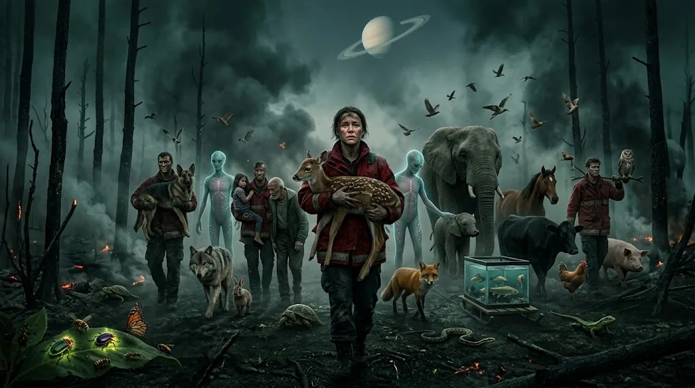

PRO EXTINCTION
Together, we end suffering.
強いられた存在と苦しみを終わらせることに取り組む団体
私たちの使命
妥協せず、物理的に可能な限り多くの苦しみを防ぐこと。
#1 取り組み 1
運動を広げ、何十億年もの苦しみを防ぐことを可能にする。

#2 取り組み 2
物理的に可能な限り多くの犠牲者への、差別のない普遍的な支援。動物のため、できる限り多くの地球外生命のため、そして人間のため。
#3 取り組み 3
組織的な行動とアクティビズムだけに基づく。犠牲者を犠牲にした嘆きはしない。
#4 取り組み 4
完全に理性的で、共感的で、無神論的で、論理的で、公正。
ご質問は?
プロジェクトの詳細は info@proextinction.com までお問い合わせください
AI 英語からの機械翻訳 (AI)。